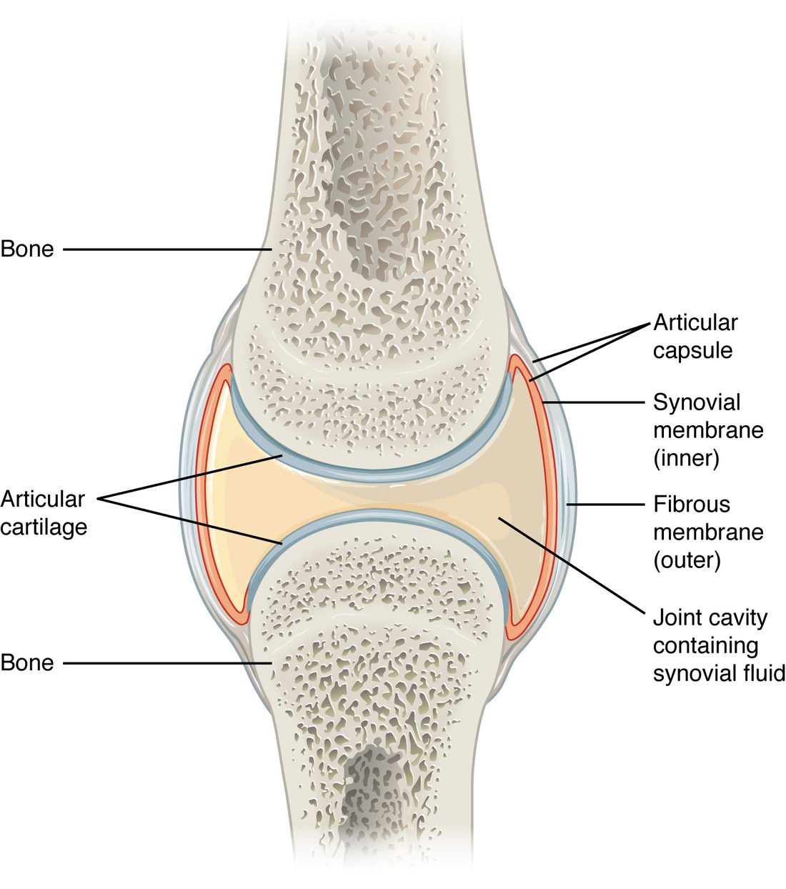
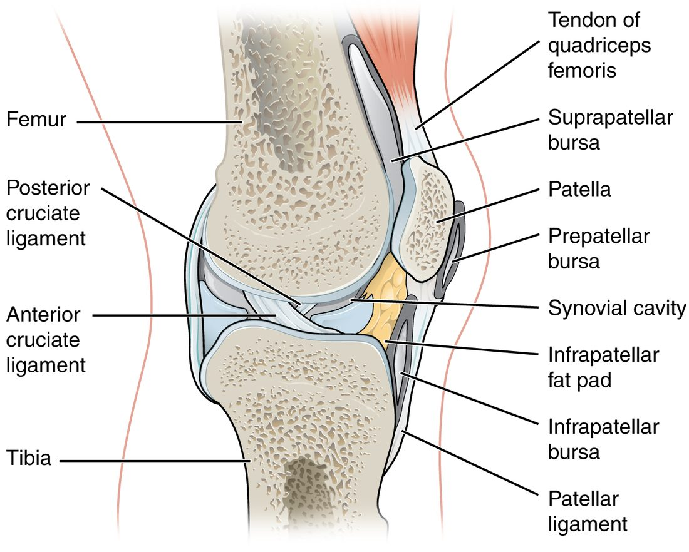
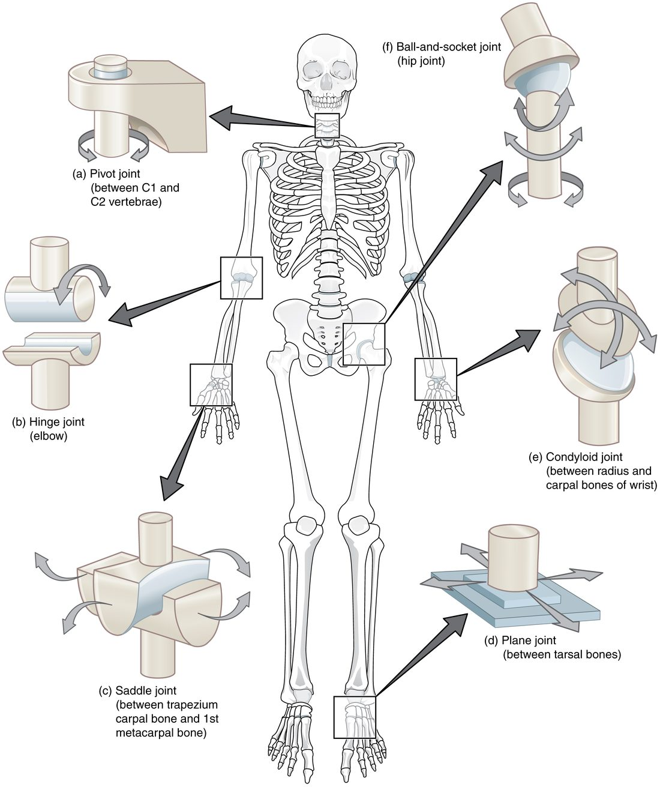
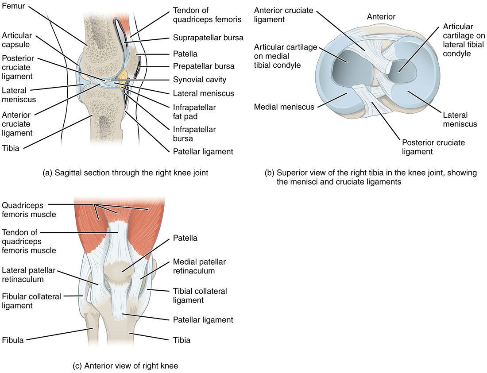
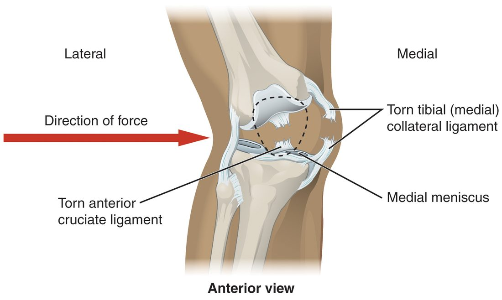
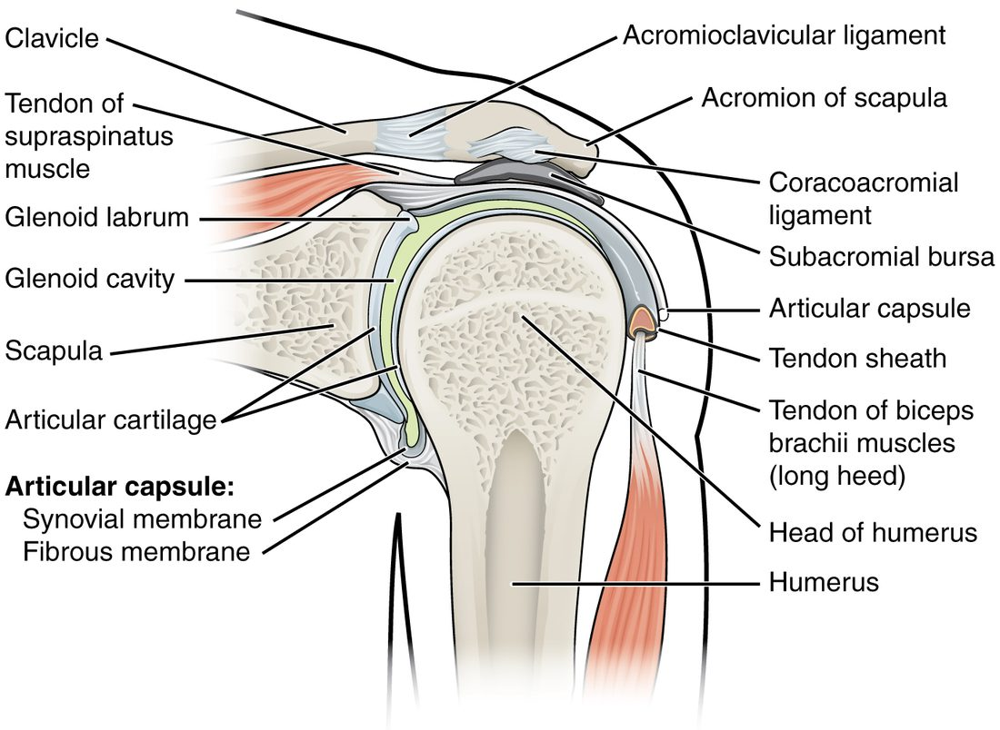
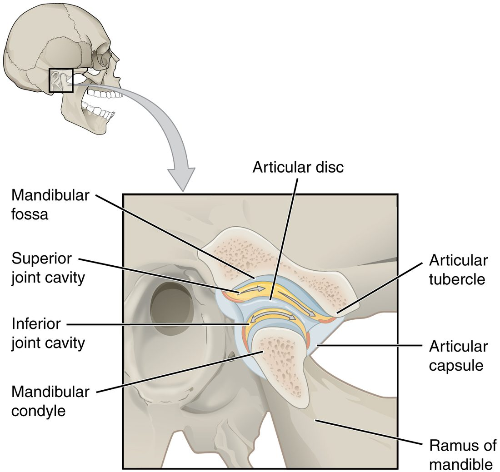
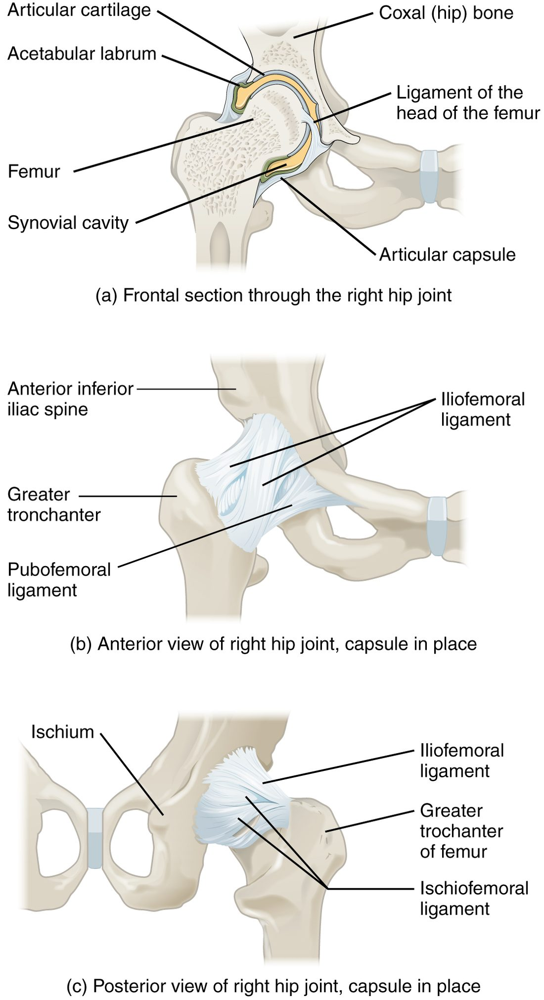
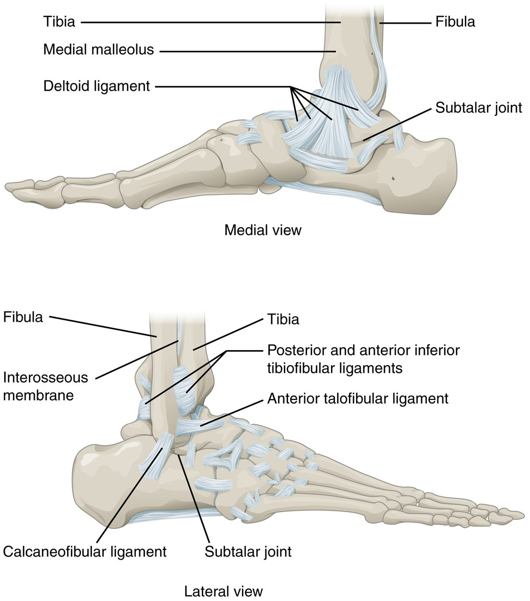
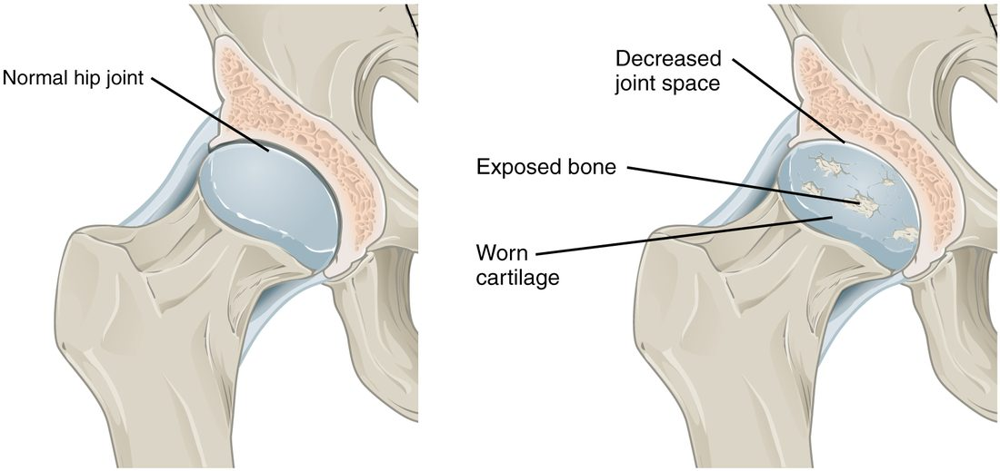

Most of the joints you think of when you move are synovial joints: your shoulder, knee, knuckles and jaw. This page covers synovial joint structure and types. It starts with the parts every synovial joint shares, then the fluid-filled sacs that cushion tendons, then the six joint shapes and the movements each allows. After that it looks closely at the knee and the shoulder, tours the other named joints from the jaw to the toes, and ends with the common ways synovial joints fail: sprains, dislocations and osteoarthritis.
The parts of a synovial joint
In the previous topic you saw that a synovial joint is the one structural class with a space between the bones. Every synovial joint is built from the same set of parts (Figure 1).

- Articular cartilage is a thin layer of hyaline cartilage covering each bone surface that touches the other bone. It is smooth, slippery and slightly compressible.
- The joint cavity (also called the synovial cavity) is the narrow space between the two cartilage-covered bone ends. It is a real space, but only a film of fluid thick.
- Synovial fluid fills the cavity. It is a clear, thick, slippery fluid, about the consistency of raw egg white.
- The articular capsule (also called the joint capsule) is a sleeve that encloses the cavity. It has two layers. The outer fibrous membrane is dense irregular connective tissue that attaches to the periosteum of each bone and holds the bones together. The inner synovial membrane lines every surface inside the cavity that is not covered by articular cartilage.
Synovial fluid
The synovial membrane makes synovial fluid. Water and small solutes filter out of small blood vessels in the membrane, and cells in the membrane add long, slippery molecules that make the fluid thick and coat the cartilage. The fluid does three jobs, each by a clear mechanism:
- Lowers friction. The slippery molecules coat both cartilage surfaces, so the surfaces slide past each other with less resistance than ice sliding on ice.
- Feeds the cartilage. Articular cartilage has no blood vessels. When you load a joint, the cartilage is squeezed and fluid is pushed out of it; when the load comes off, the cartilage springs back and draws fresh synovial fluid in, carrying oxygen and nutrients by diffusion. Movement and loading pump nutrients into the cartilage.
- Spreads load. Fluid pressed out of the loaded cartilage forms a thin, pressurized film between the surfaces and shares the load with the cartilage.
Articular discs and ligaments
Some synovial joints have extra parts.
- An articular disc is a pad of fibrocartilage inside the joint, between the bone ends. It makes two surfaces that do not match fit together better and spreads the load. The menisci of the knee are C-shaped articular discs; the jaw joint and the joint between the sternum and clavicle each have a full disc.
- Ligaments hold the bones together and limit how far they can move. They are named by where they sit relative to the capsule:
- An intrinsic ligament is a thickened band within the fibrous membrane of the capsule itself.
- An extrinsic ligament lies outside the capsule, separate from it.
- An intracapsular ligament lies inside the capsule. It is covered by synovial membrane, so it sits outside the fluid-filled cavity even though it is inside the capsule.
Muscles that cross a joint, and their tendons, also hold it together. At the shoulder they do most of the work.
Bursae and tendon sheaths
Wherever skin, a tendon or a muscle slides over a bone, friction could wear them. A bursa (plural bursae; bursa = purse) is a flattened sac of synovial membrane holding a thin film of synovial fluid. It sits between the moving layers so they glide over each other.
- A subcutaneous bursa (sub- = under, cutane- = skin) lies between the skin and a bone. The prepatellar bursa, between the skin and the patella, is one (Figure 2).
- A submuscular bursa lies between a muscle and a bone, or between two muscles.
- A subtendinous bursa lies between a tendon and a bone.
The subacromial bursa sits under the acromion of the scapula, between it and the tendons over the top of the shoulder joint.
A tendon sheath is a bursa stretched into a tube and wrapped around a tendon, like a sleeve. Tendon sheaths surround the long tendons that pass across your wrist into the fingers, where each tendon slides a long way with every movement.

The six types of synovial joint
The shape of the two joint surfaces decides which ways the bones can move. Anatomists group synovial joints into six shapes (Figure 3), and count the axes each allows. An axis is the imaginary line a bone moves around, like the pin of a door hinge.
- A uniaxial joint (uni- = one) moves around one axis, so the bone moves back and forth in one plane.
- A biaxial joint (bi- = two) moves around two axes, in two planes at right angles.
- A multiaxial joint (multi- = many) moves around three axes: in every plane, and it can also turn the bone around its own length.

- Plane joint. Two flat or slightly curved surfaces slide over each other. The ligaments allow only small glides. Examples: between the carpal bones, between the tarsal bones, and between the articular processes of neighboring vertebrae.
- Hinge joint. A rounded, spool-shaped surface fits into a curved trough. The bone swings back and forth in one plane, like a door. Uniaxial. Examples: the elbow, the joints between finger bones, the ankle.
- Pivot joint. A rounded peg of one bone turns inside a ring formed by another bone and a ligament. The bone turns around its own long axis. Uniaxial. Examples: the dens of the axis turning inside the ring of the atlas when you shake your head "no"; the head of the radius turning against the ulna.
- Condyloid joint (also called an ellipsoid joint). An oval, rounded surface fits into an oval hollow. It moves in two planes (forward and back, side to side) but cannot turn. Biaxial. Examples: the wrist between the radius and the carpal bones; the knuckles where the fingers meet the hand.
- Saddle joint. Each surface is shaped like a saddle, curving up in one direction and down in the other, and the two fit together like a rider on a horse. Biaxial, with a wider range than a condyloid joint. Example: the base of the thumb, between the trapezium and the first metacarpal.
- Ball-and-socket joint. The round head of one bone fits into a cup-shaped socket of another. It moves in every plane and turns. Multiaxial. Examples: the shoulder and the hip.
| Plane | Hinge | Pivot | Condyloid | Saddle | Ball-and-socket | |
|---|---|---|---|---|---|---|
| Surface shapes | Flat on flat | Spool in a trough | Peg in a ring | Oval in an oval hollow | Saddle on saddle | Ball in a cup |
| Axes | Glides only (see note) | One | One | Two | Two | Three |
| Movement | Small slides | Swing in one plane | Turn around the bone's long axis | Swing in two planes, no turning | Swing in two planes, wide range | Swing in every plane and turn |
| Example | Between carpal bones | Elbow | Atlas on the dens of the axis | Wrist (radius and carpals) | Base of the thumb | Shoulder, hip |
Note: books disagree on how to count a plane joint's axes. Some call plane joints nonaxial, because they glide rather than swing around an axis; others call them multiaxial, because the glides can go in several directions. Either way, the movement is small.
The knee
The knee joint is the largest joint in the body (Figure 4). It joins the femur to the tibia, with the patella in front. It works mostly as a hinge, bending and straightening, but when the knee is bent the tibia can also turn a little on the femur.

The rounded femoral condyles sit on the nearly flat tibial condyles. On their own, those surfaces would barely stay together. Five kinds of structure hold them:
- Medial meniscus and lateral meniscus. Two C-shaped articular discs of fibrocartilage (meniskos = crescent) rest on the tibial condyles. They are thick at the outer edge and thin at the inner edge, so they deepen the flat tibial surfaces into shallow cups and spread the femur's load over a larger area. The medial meniscus is attached to the tibial collateral ligament, so an injury that tears that ligament often tears the medial meniscus too.
- Anterior cruciate ligament (ACL) and posterior cruciate ligament (PCL). Two intracapsular ligaments cross each other in the middle of the knee (cruci- = cross), forming an X. They are named for where they attach on the tibia. The ACL runs from the front of the tibia up and back to the femur, and stops the tibia from sliding forward under the femur. The PCL runs from the back of the tibia up and forward, and stops the tibia from sliding backward.
- Tibial collateral ligament (also called the medial collateral ligament) on the inner side, from the femur to the tibia. It stops the knee from being pushed inward. It is an intrinsic ligament, part of the capsule.
- Fibular collateral ligament (also called the lateral collateral ligament) on the outer side, from the femur to the head of the fibula. It stops the knee from being pushed outward. It is an extrinsic ligament, separate from the capsule.
- Patellar ligament in front, from the patella down to the tibial tuberosity. The large muscle group on the front of the thigh pulls on the patella through a tendon, and the patellar ligament carries that pull on to the tibia.
Knee injuries
Because the knee's stability comes from soft tissue, it is often injured. An ACL tear usually happens without contact: you plant your foot, then twist or stop suddenly with the knee nearly straight, and the tibia shoots forward or twists under the femur. A blow to the outer side of the knee pushes it inward, stretching the tibial collateral ligament until it tears (Figure 5).

The shoulder
The glenohumeral joint is the shoulder joint proper, between the head of the humerus and the glenoid cavity of the scapula (Figure 6). It is a ball-and-socket joint with the widest range of movement in the body, and it pays for that range in stability.

- The glenoid cavity is small and shallow, about a third the size of the humeral head. A golf ball on a tee is the usual picture.
- The glenoid labrum (labrum = lip) is a ring of fibrocartilage around the rim of the glenoid cavity. It deepens the socket a little.
- The capsule is loose, especially underneath, which is what lets the arm move so far.
- The joint is held in place mainly by muscles. Four short muscles from the scapula send their tendons across the front, top and back of the joint and blend into the capsule. Together these tendons form the rotator cuff, which presses the humeral head into the glenoid cavity whenever those muscles are active.
With a shallow socket, a loose capsule and muscles doing most of the holding, the glenohumeral joint is the joint most often dislocated. The head of the humerus usually comes out forward and down, where the capsule is weakest and no tendon crosses.
Other named joints
Each large joint is a variation on the same parts, tuned to a different balance of mobility and stability.
The jaw
The temporomandibular joint (TMJ) joins the condylar process of the mandible to the mandibular fossa of the temporal bone, just in front of your ear (Figure 7). An articular disc divides it into an upper and a lower cavity. In the lower cavity the mandible swings like a hinge; in the upper cavity the disc and the condyle glide forward onto a bump of the temporal bone. Opening your mouth wide uses both. Put a fingertip in front of your ear and open wide: you can feel the condyle slide forward.

The elbow
The elbow joint has three joints inside one capsule (Figure 8).
- The humeroulnar joint: the trochlea of the humerus fits into the trochlear notch of the ulna. This is the hinge that bends and straightens your elbow. The olecranon locks into the olecranon fossa when the elbow is straight, which stops it from bending backward.
- The humeroradial joint: the capitulum of the humerus meets the head of the radius.
- The proximal radioulnar joint: the head of the radius turns inside a ring made by the ulna and the annular ligament (annul- = ring). This pivot joint lets you turn your palm up and down.
Two ligaments brace the sides: the ulnar collateral ligament on the inner side and the radial collateral ligament on the outer side. Repeated overhead throwing stretches and can tear the ulnar collateral ligament.

In a toddler, the annular ligament is loose and the head of the radius is small. A sharp pull on the hand, such as swinging a child by the arms, can slide the radial head partly out of the ligament. The child holds the arm still and will not use it. A clinician can usually slip it back with a simple turning movement.
The hip
The hip joint is a ball-and-socket joint between the head of the femur and the acetabulum of the hip bone (Figure 9). Compare it with the shoulder: the acetabulum is deep, a little less than half a sphere, and the acetabular labrum, a ring of fibrocartilage, deepens it so that socket and labrum together grip more than half of the femoral head. The capsule is thick and reinforced by strong intrinsic ligaments that spiral around it. The strongest is the iliofemoral ligament in front, a Y-shaped band from the ilium to the femur. When you stand, these spiraling ligaments tighten and pull the femoral head firmly into the socket.
The result is a joint that moves less than the shoulder but rarely dislocates. It takes great force, such as a knee striking a car's dashboard in a crash, to drive the femoral head out.

| Shoulder (glenohumeral joint) | Hip joint | |
|---|---|---|
| Type | Ball-and-socket | Ball-and-socket |
| Socket | Glenoid cavity: small and shallow | Acetabulum: deep; with its labrum, grips more than half the head |
| Fibrocartilage rim | Glenoid labrum | Acetabular labrum |
| Capsule | Loose | Thick and tight |
| Main source of stability | Rotator cuff tendons | Bony socket and strong ligaments (iliofemoral) |
| Range of movement | Widest in the body | Wide, but less than the shoulder |
| Dislocation | The most often dislocated joint | Rare; needs great force |
The ankle
The ankle joint, or talocrural joint (crur- = leg), is a hinge between the talus below and the tibia and fibula above (Figure 10). The medial malleolus of the tibia and the lateral malleolus of the fibula hang down on either side of the talus like the jaws of a wrench. The joint lets the foot tip up and down.
- The deltoid ligament is a broad, triangular fan on the inner side, from the medial malleolus to the tarsal bones. It is very strong.
- The outer side has three smaller, separate ligaments. The one most often injured is the anterior talofibular ligament, from the front of the lateral malleolus to the talus.
That imbalance explains the common ankle injury. When you land on the outer edge of your foot and the sole rolls inward, the weaker ligaments on the outer side stretch or tear, the anterior talofibular ligament first.

Named joints of the girdles, spine, wrist, hand and foot
Most joint names are built from the two bones they join. Read "acromioclavicular" as acromion plus clavicle and you already know where it is. This table lists the named joints you need, with each one's type.
| Joint | Bones joined | Type |
|---|---|---|
| Sternoclavicular joint | Manubrium of the sternum and clavicle | Saddle, with an articular disc. The only joint that attaches the upper limb to the axial skeleton. |
| Acromioclavicular joint | Acromion of the scapula and clavicle | Plane |
| Sacroiliac joint | Sacrum and ilium | Plane, bound by very strong ligaments; moves only slightly |
| Atlanto-occipital joint | Occipital condyles and atlas | Condyloid (nodding "yes") |
| Atlantoaxial joint | Atlas and axis, around the dens | Pivot (shaking "no") |
| Zygapophysial joints (facet joints) | Articular processes of neighboring vertebrae | Plane |
| Proximal radioulnar joint | Head of the radius and ulna, at the elbow | Pivot |
| Distal radioulnar joint | Radius and ulna, at the wrist | Pivot |
| Radiocarpal joint | Radius and the first row of carpal bones | Condyloid (the wrist) |
| Midcarpal joint | First and second rows of carpal bones | Plane (gliding) |
| Carpometacarpal joint | Carpal bones and metacarpals | Saddle at the thumb; plane for the fingers |
| Metacarpophalangeal joint | Metacarpals and the first phalanges (knuckles) | Condyloid |
| Interphalangeal joint | Neighboring phalanges of a finger or toe | Hinge |
| Subtalar joint | Talus and calcaneus | Plane; lets the sole turn inward and outward |
| Metatarsophalangeal joint | Metatarsals and the first phalanges of the toes | Condyloid |
| Distal tibiofibular joint | Lower ends of the tibia and fibula | Not synovial: a syndesmosis (fibrous), held by strong ligaments |
Two pairs to keep straight. The atlanto-occipital joint (skull on atlas) nods; the atlantoaxial joint (atlas on axis) turns. And the wrist's radiocarpal joint is condyloid, but the thumb's carpometacarpal joint is a saddle, which is why your thumb can sweep across your palm and your wrist cannot.
Sprain, dislocation and subluxation
- A sprain is a stretch or tear of a ligament. A mild sprain stretches some fibers; a severe one tears the ligament through. Ligaments are dense regular connective tissue with a poor blood supply, so they heal slowly.
- A dislocation is a joint injury in which the bone surfaces are forced completely out of contact with each other. The capsule and ligaments are stretched or torn in the process.
- A subluxation (sub- = partly, luxat- = put out of place) is a partial dislocation: the surfaces still touch but are out of line. The toddler's radial head slipping partly out of the annular ligament is a subluxation.
Note the difference from the bone tissue chapter: a fracture is a break in a bone; a sprain is an injury to a ligament.
Osteoarthritis
Osteoarthritis (oste- = bone, arthr- = joint, -itis = inflammation) is the most common joint disease. It is a disease of the whole synovial joint, not just its cartilage (Figure 11).

Here is the sequence:
- Repeated or abnormal loading, aging, a past injury or excess body weight damages the articular cartilage. Its chondrocytes cannot keep up with repair, and cartilage has no blood supply to bring in repair cells.
- The cartilage softens, frays and thins. On an X-ray, the space between the bones narrows because the cartilage that filled it is thinner.
- Where cartilage wears through, bone grinds on bone. The bone underneath thickens, and bony spurs grow at the joint edges.
- Fragments and the damaged tissue irritate the synovial membrane, which becomes mildly inflamed and makes extra fluid.
- The result is pain with use, stiffness after rest, a grating feeling on movement, and a joint that moves less.
It most often affects the joints that carry weight or work hard: the knees, hips, spine and the joints of the hands.
Summary
A synovial joint has articular cartilage on the bone ends, a joint cavity filled with synovial fluid, and a two-layer articular capsule (fibrous membrane outside, synovial membrane inside); some add articular discs and intrinsic, extrinsic or intracapsular ligaments. Bursae and tendon sheaths are sacs of synovial membrane that let tissues glide. The six types are plane, hinge and pivot (uniaxial), condyloid and saddle (biaxial), and ball-and-socket (multiaxial). The knee relies on its menisci, cruciate, collateral and patellar ligaments; the shoulder trades stability for range and relies on the rotator cuff; the hip has a deep socket and strong ligaments. Sprains injure ligaments, dislocations and subluxations push joint surfaces out of line, and osteoarthritis breaks down the whole joint, starting with its cartilage.